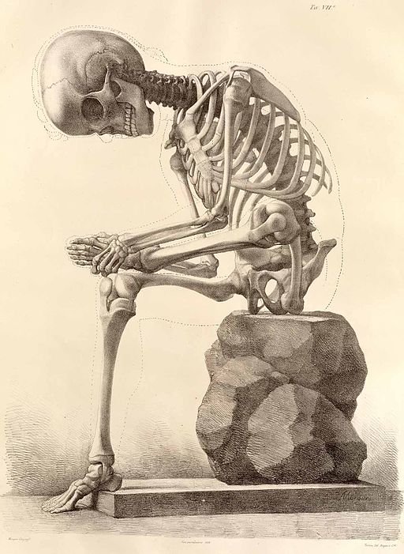

<style>
    .reveal section.has-dark-background h1, .reveal section.has-dark-background { color: #fff; }
    .reveal section h1 { text-transform: none; }
    .reveal section h1.title { width: 75%; margin: 0 auto; line-height: 1.5em; }
    .reveal section .subtitle { color: #ddd; margin-top: 2em; font-size: 0.8em; line-height: 1.3em; }
    .reveal section .subtitle.light { color: #444; }
    .reveal section .subtitle a:link, .reveal section .subtitle a:visited { color: #ccf; }
    .reveal section .subtitle.light a:link, .reveal section .subtitle.light a:visited { color: #88d; }
    .reveal section sup { font-size: 0.6em; position: relative; top: -1em; }
    .octocat, .slide-image { width: 20rem; }
    .reveal section .dark-bg-header { color: #fff; font-weight: bold; text-shadow: 0.05em 0.05em 0.1em #000; }
    .reveal section .code-site { position: relative; text-align: center; bottom: -2em;  }
    .reveal .code-site:before { content: ""; }
    .reveal section cite { width: 100%; text-align: center; }
</style>

<section data-background='black'>
    <h1 class='title'>
        State of Open Source in the Federal Government
    </h1>

    <p class='subtitle'>
        Jordan Kasper<br>
        <a href='https://bsky.app/profile/jakerella.bsky.social' target='_blank' title='link to my Bluesky profile'>@jakerella.bsky.social</a>
    </p>
</section>

<section>
    <h1>Open Source is good. <sup>[citation needed]</sup></h1>
</section>

<section>
    <h1>Reusability</h1>
    
</section>

<section>
    <h1>Collaboration and Contribution</h1>
    
</section>

<section>
    <h1>Security</h1>
    
</section>

<section data-background='black'>
    <h1 style='color: #fff;'>Transparency</h1>
    
</section>

<section>
    <h1>Cost *</h1>
    
</section>

<section>
    <h1>For the people...</h1>
    
</section>

<section>
    <h1>The Challenges</h1>
</section>

<section data-background='images/hacking.jpg'>
    <h1 class='dark-bg-header' style='margin: 3em 0 6em 0;'>"OSS is insecure"</h1>
    <cite style='color: #eee'>https://www.flickr.com/photos/thepreiserproject/</cite>
</section>

<section>
    <h1>"It's illegal"</h1>
    
    <cite style='color: #eee'>https://undraw.co</cite>
</section>

<section data-background='images/mine.jpg'>
    <h1 class='dark-bg-header' style='margin: 5em 0 4em 0;'>"We paid for it, it's ours."</h1>
    <cite>http://disney.wikia.com/wiki/Seagulls_(Finding_Nemo)</cite>
</section>

<section>
    <h1>Lack of Techincal Knowledge</h1>
    
    <cite>http://www.doncio.navy.mil/CHIPS/ArticleDetails.aspx?ID=7076</cite>
</section>

<section data-background='#fdefcb'>
    <h1>Stagnation</h1>
    
    <cite>https://commons.wikimedia.org/wiki/File:III-A-12.jpg</cite>
</section>

<section>
    <h1>The Reality</h1>
</section>


<section data-background='images/source-code.jpg'>
    <h1 class='dark-bg-header' style='margin-top: -4em;'>Federal Source Code Policy</h1>
</section>

<section>
    <h1>Section 5: Open Source Software</h1>
    <h2 style='text-transform: none;'><a href='https://sourcecode.cio.gov'>sourcecode.cio.gov</a></h2>
</section>

<section>
    
    <h2 class='fragment'>Centralized Information</h2>
    <h2 class='fragment'>Liason to Agencies</h2>
    <h2 class='fragment'>Project Tracking</h2>
</section>

<section data-background='images/code-gov-compliance.png'></section>


<section data-background='#555'>
    
    <h1 style='color: #fff;'>What can you do?</h1>
</section>

<section data-background='images/biden_coding.jpg'>
    <h1 class='dark-bg-header' style=' margin-top: 4em; line-height: 1.5em;'>
        Write some code!<br>Code.gov/browse-projects
    </h1>
    <cite class='code-site' style='color: #ddd;'>Official White House Photo by David Lienemann</cite>
</section>


<section data-background='#f5ffff'>
    <h1 class='title' style='color: #000;'>Thank You!</h1>
    
    <h2>Current State of Open Source in the Federal Government</h2>

    <p class='subtitle light'>
        Jordan Kasper<br>
        <a href='https://jordankasper.com' target='_blank' title='link to my personal website'>jordankasper.com</a> | 
        <a href='https://bsky.app/profile/jakerella.bsky.social' target='_blank' title='link to my Bluesky profile'>@jakerella.bsky.social</a>
    </p>

    <cite class='code-site'>
        All Octocats liberally sprung from https://octodex.github.com
        <br>
        (This is <em>not an endorsement</em> of GitHub, I just like the Octocats.)
    </cite>
</section>

<section data-background='#000000'>
    <h1>Referenes</h1>

    <ul>
        <li><a href='#'>Link</a></li>
    </ul>
</section>
